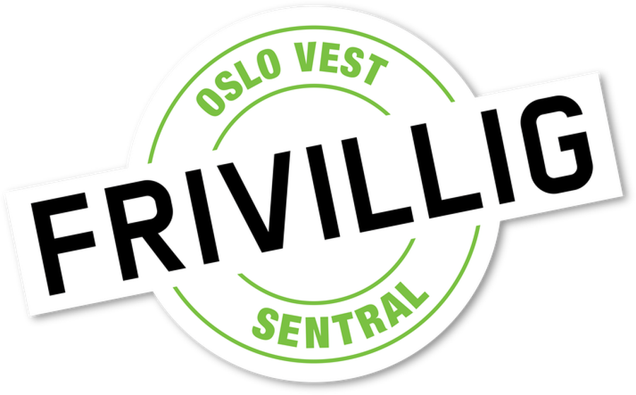
Oslo Vest Frivilligsentralinviterer til
Røa Bibliotek · tirsdag 22. september kl. 18.00
Røa Soup Idéene får en scene
Har du en idé som gjør nabolaget vårt bedre? Kom og fortell den til naboene dine over en tallerken suppe. Publikum stemmer fram kveldens vinner – og vinneren går hjem med 10 000 kroner til å gjøre ideen virkelig.
Gratis inngang · Suppe, boller og kaffe fra Åpent Bakeri · Alle er velkomne
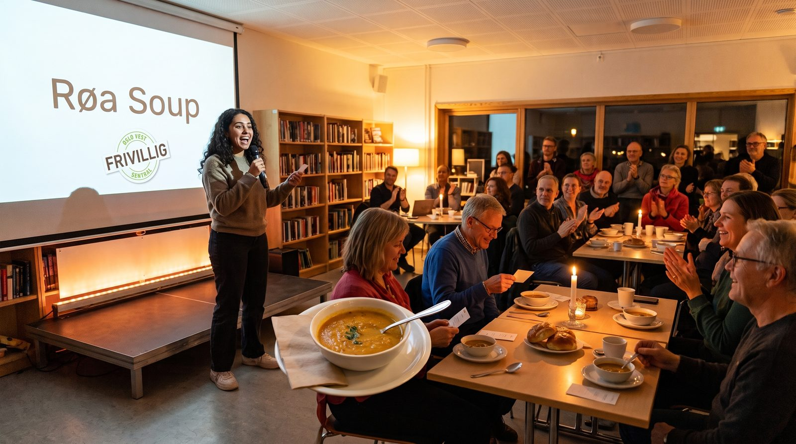
-
Når
Dørene åpner kl. 18.00 -
Hvor
Røa Bibliotek Vækerøveien 197, 0751 Oslo -
Pris
Gratis inngang Suppe, boller og kaffe er inkludert -
Premie
10 000 kroner Publikum stemmer fram vinneren
En kveld. En idé. Et bedre nabolag.
De beste ideene for Røa finnes allerede – hos dem som bor her
Røa Soup er en enkel idé lånt fra hele verden: folk møtes, deler et måltid, hører på hverandres forslag og bestemmer i fellesskap hvilket ett som skal få penger. Ingen søknadsskjemaer på tolv sider. Ingen komité som møtes et sted langt unna. Bare naboer, suppe og en kveld der en god idé kan bli til noe.
Kanskje har du gått og tenkt på noe lenge. En aktivitet som mangler. En plass som burde vært tatt i bruk. Noen som burde vært invitert med. Det trenger ikke være stort eller ferdig gjennomtenkt – det holder at det betyr noe for nabolaget. Vi hjelper deg gjerne med å spisse det før du står på scenen.
Du trenger ikke en organisasjon i ryggen. Du trenger en idé og fem minutter.
Slik fungerer det
Fire enkle steg fra idé til støtte
Hele kvelden tar rundt to timer, og du får god hjelp underveis.
-
Du sender inn ideen
Fyll ut skjemaet her på siden. Noen setninger er nok til å komme i gang – vi tar kontakt.
-
Vi finner ut av det sammen
Mari ringer deg, hører hva du tenker og hjelper deg å forberede en kort presentasjon.
-
Du pitcher på Røa Bibliotek
Noen minutter på scenen, uten krav til lysbilder eller store fakter. Fortell hvorfor ideen betyr noe.
-
Publikum stemmer
Alle som er der spiser suppe og stemmer. Vinneren får 10 000 kroner samme kveld.
Ideen din bør …
To krav – og ett godt råd på veien
Vi holder kriteriene så enkle som mulig, fordi vi heller vil høre mange gode forslag enn å skremme noen fra å prøve.
-
Gi noe tilbake til lokalsamfunnet
Ideen skal komme flere enn deg selv til gode. Den kan være liten, praktisk og helt konkret – det viktigste er at noen får det bedre av den.
-
Ha lokal tilknytning til Vestre Aker
Det skal skje her hvor vi bor. Røa, Hovseter, Voksen, Holmen, Vinderen, Slemdal – hele bydelen teller.
-
Rådet: start i det små
10 000 kroner er en startpakke, ikke et helt budsjett. Fortell gjerne hva det første steget koster og hvordan du kommer i gang.
Hva slags idé?
Hvis du lurer på om ideen din er «god nok»
Den er sannsynligvis det. Her er noen eksempler på hva folk pleier å komme med – bare for å vise bredden:
- En bokbytte-kasse i parken
- Fellesmiddag for naboer som spiser alene
- Verktøybibliotek i borettslaget
- Sykkelverksted for ungdom
- Turgruppe for nye i bydelen
- Konsert på sykehjemmet
- Reparasjonskafé
- Blomsterkasser i gata
- Leksehjelp på et nytt sted
- Åpen hage-dag
Ingen av disse er «riktig svar». Din idé er sannsynligvis bedre – fordi du vet noe om nabolaget som ingen andre har tenkt på.
Program for kvelden
Tirsdag 22. september på Røa Bibliotek
Kom når det passer – vi holder på i rundt to timer.
-
Dørene åpner
Suppe, boller og kaffe fra Åpent Bakeri. Sett deg ned og hils på noen du ikke kjenner.
-
Velkommen
Oslo Vest Frivilligsentral ønsker velkommen og forklarer hvordan avstemningen foregår.
-
Pitchene
Kveldens deltakere presenterer ideene sine, én etter én, med rom for spørsmål fra salen.
-
Avstemning og mingling
Publikum stemmer mens vi fyller på kaffen og prater videre om det vi nettopp hørte.
-
Vinneren kåres
10 000 kroner deles ut samme kveld, og arbeidet med å gjøre ideen virkelig kan begynne.
Sted
Røa Bibliotek
Vækerøveien 197, 0751 OsloMeld inn ideen din
Fortell oss hva du har lyst til å få til
Skriv noen setninger om ideen din – den trenger ikke være ferdig. Mari tar kontakt, hjelper deg videre og forteller hva som skjer før 22. september.
Det er helt uforpliktende å sende inn. Du bestemmer selv om du vil stå på scenen etter at vi har snakket sammen.
Vil du heller ringe? Kontakt Mari Wigaard på 23 68 08 50 eller send e-post til mari@oslovest.frivilligsentral.no.
Har du ikke en idé?
Kom likevel – det er publikum som bestemmer
Halve poenget med Røa Soup er alle som sitter i salen. Det er dere som lytter, stiller spørsmål og til slutt avgjør hvilken idé som får pengene. Ta med en nabo, spis god suppe og bruk stemmen din. Det koster ingenting, og du trenger ikke melde deg på.
Se program for kvelden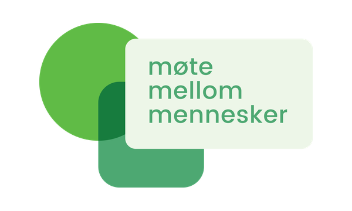
Arrangør
Oslo Vest Frivilligsentral inviterer
Vi jobber for at flere skal møtes, bidra og høre til der de bor. Røa Soup er vår måte å si det på: nabolaget blir bedre av ideene som allerede finnes her – de trenger bare en scene, litt penger og noen som heier.
Sammen med
Røa Soup blir til i samarbeid med disse gode kreftene i nærmiljøet.
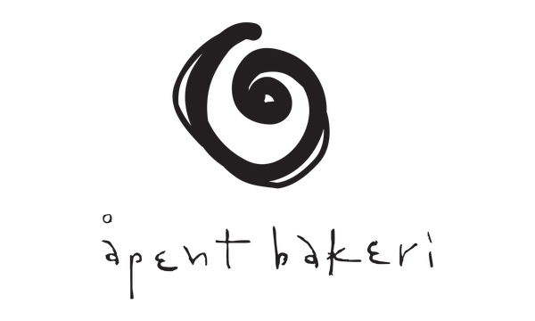
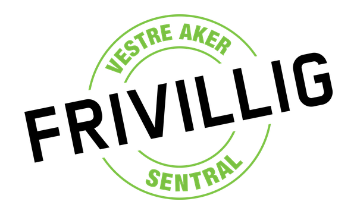
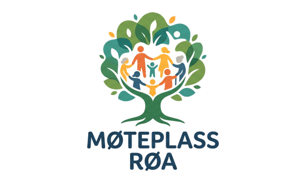
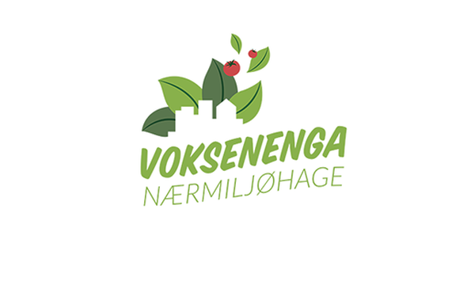
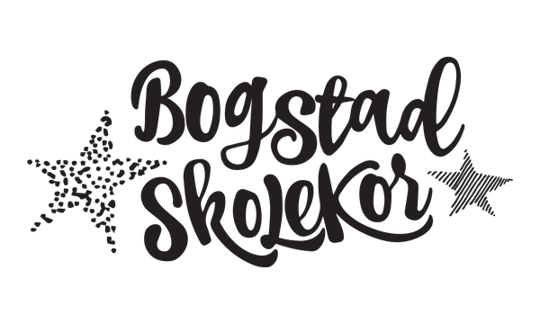
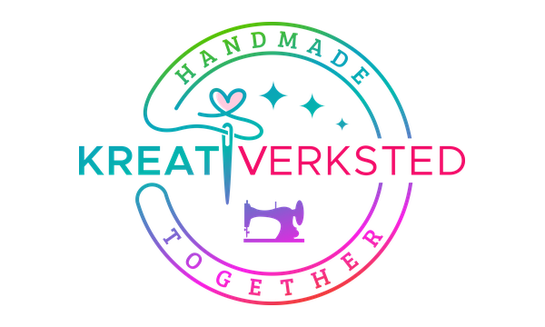
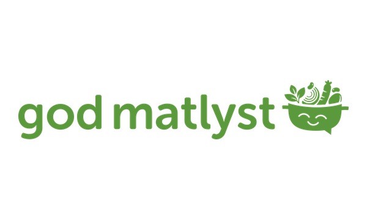
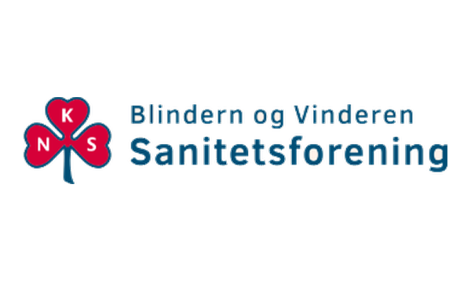